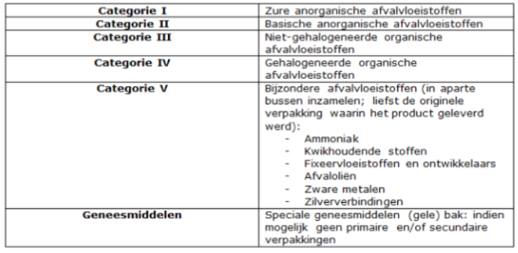

<!--
  Generated template for the AfvalVerwijderingPage page.

  See http://ionicframework.com/docs/components/#navigation for more info on
  Ionic pages and navigation.
-->
<ion-header>

  <ion-navbar>
    <ion-title>afvalVerwijderingPage</ion-title>
  </ion-navbar>

</ion-header>


<ion-content>
    <form (ngSubmit)="valideren()">
            <ion-label>{{vraag}}</ion-label>
            <ion-list radio-group (ngModel)="geselecteerd">
                
                <ion-item *ngFor="let mogelijkheid of mogelijkheden">
                    
                    <ion-label>{{mogelijkheid}}</ion-label>
                    <ion-radio name="antwoord" [value]="mogelijkheid" (ionSelect)="setTest(mogelijkheid)"></ion-radio>
                </ion-item>
            </ion-list>
         
        
        <button ion-button type="submit">
            Volgende
        </button>
    </form>
</ion-content>
